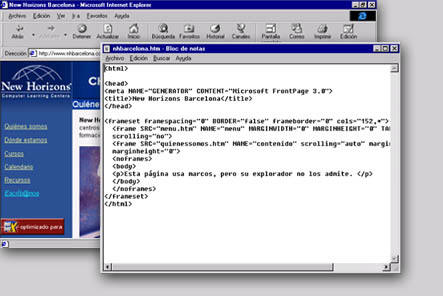

FrontPage 2000 le ofrece la posibilidad de incorporar diversos elementos a su documento Web. En la vista Página, puede insertar texto, hipervínculos, tablas, imágenes, distintos títulos, líneas horizontales, fuentes, efectos especiales y componentes interactivos.
Además, FrontPage 2000 le ayuda a administrar la estructura de su Web con las vistas Carpetas, Informes, Exploración, Hipervínculos y Tareas.
Por último, FrontPage 2000 le permite comprobar que su Web funciona correctamente para, de esta manera, publicarla en Internet. Compruebe sus páginas localmente para asegurarse de que ofrecen el aspecto deseado. Si es así, publique sus páginas en un servidor del World Wide Web.
Internet y el World Wide Web se están convirtiendo en un pilar de la comunicación moderna y por ese motivo hay un aumento creciente en la demanda de personal capaz de mantener sitios Web y crear páginas Web. Fíjese en las ofertas de trabajo que aparecen en los periódicos de los domingos: todo el mundo está buscando profesionales de la red. A las empresas grandes y pequeñas les urge establecer su presencia en el World Wide Web. Disponer de un buen sitio Web puede significar cientos o miles de clientes potenciales para una compañía.
Es posible que haya pensado en crear un sitio Web para su empresa, pero que no pueda permitirse el lujo de contratar a un profesional. O tal vez quiera aprender a crear y mantener páginas Web para que otra persona le pague por su trabajo. En cualquier caso, Microsoft FrontPage 2000 ha simplificado el arte de la creación y administración de sitios Web, e incluye diversas herramientas que le permitirán lograrlo con un resultado profesional.
Hasta ahora, el proceso de crear una página en el World Wide Web resultaba complicado. El lenguaje HTML (HyperText Markup Language) es relativamente sencillo en comparación con los lenguajes de programación y se puede crear y editar con un procesador de texto normal. A pesar de esto, el usuario debe pasar bastante tiempo aprendiendo y practicando con él.
A la izquierda, los códigos HTML. A la derecha, el aspecto que ofrece en un explorador.
Una vez ha escrito el código HTML, necesita un servidor para enviar su información por Internet, así como una extensa variedad de programas y de herramientas de dominio público. Todo esto le proporciona unas páginas con texto, formularios y mapas de imágenes.
Las características más poderosas (por ejemplo, un contador para saber las veces que un sitio Web ha sido visitado) requieren un conocimiento de creación de scripts de Common Gateway Interface (CGI). Normalmente, para ello se necesita que la persona esté familiarizada con otros lenguajes de programación más poderosos, como Perl, C and C++.
Estas limitaciones son las que producían más frustraciones cuando los sitios Web no alcanzaban las expectativas esperadas, y entonces todo el dinero gastado en diseñadores profesionales resultaba difícil de justificar.
FrontPage 2000 le permite crear y administrar interesantes sitios Web de Internet e Intranet en un entorno sencillo, lo que se conoce con las siglas WYSIWYG (What You See Is What You Get). Con este programa, no es necesario que conozca HTML para conseguir unos resultados profesionales. FrontPage 2000 importa y convierte automáticamente archivos de texto ya existentes a formato HTML. Además, puede importar imágenes para crear botones, ilustraciones y fondos para sus páginas. FrontPage 2000 convertirá de forma automática imágenes a formato GIF o JPEG.
 FrontPage 2000 incluye asistentes y plantillas para ayudarle en la creación de su sitio Web. Una vez diseñada la página, puede guardarla como plantilla y utilizarla para creaciones futuras.
Los Hipervínculos son la base del funcionamiento de Internet. FrontPage 2000 le permite crear hipervínculos a otras fuentes del Web con gran facilidad. También le permite comprobar sus enlaces y asegurarse de que funcionan correctamente antes de cargar su Web en Internet.
FrontPage 2000 le permite publicar y comprobar el funcionamiento de su Web en su propio PC. Gracias a las Extensiones del Servidor de FrontPage, puede trabajar con distintos servidores. Puede publicar su sitio Web en ordenadores que se ejecutan bajo Windows NT, Windows 95, Windows 98 o UNIX. FrontPage 2000 también admite una plataforma abierta para la mayoría de los sistemas operativos, hardware y software de servidores Web.
New Horizons Computer Learning Centers
Página Principal de Microsoft Corporation
{kind=link}